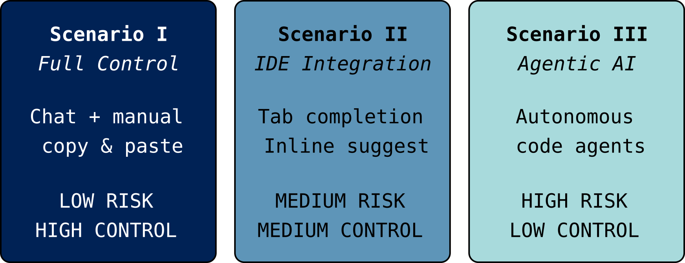

Responsible Use of Generative AI in Assisted Coding
Generative AI tools are transforming how researchers write code. From simple chatbot interactions to fully autonomous coding agents, these tools offer powerful capabilities … and with great power comes great risks and responsibilities.
This lesson provides a practical framework for researchers who want to use AI coding assistants in their day-to-day software work with research. The framework stresses the importance of maintaining control, security, and research integrity. We will explore three scenarios of increasing automation and decreasing user control, helping you make informed decisions about which approach fits your needs.
We will point out: “The effectiveness of AI-assisted coding is fundamentally constrained by the clarity and completeness of what you bring to the interaction.” (quote from “Ten Simple Rules for AI-assisted Coding in Science”). In other words, the better you understand your (problem) domain, the more you understand about how these tools work and what they do with your data, the better you can use them effectively and responsibly. Note that the AI-tools are trained on general text and code and they lack true domain expertise: there is no actual “intelligence”, just very efficient pattern matching generative machines.
{kind=link}

Prerequisites
Basic familiarity with programming (Python examples used, replace with your favourite language).
Access to a code editor (e.g. VS Code) or Jupyter environment.
Optional: Accounts for AI tools you want to try (ChatGPT, Claude, GitHub Copilot, etc. Please note that some tools are not free and require a credit card) or some tinkering to set up things locally. We do not endorse any specific provider of AI systems.
Warning
This is work in progress. Known limitations:
There might be too much content than what can be covered during the CodeRefinery workshop.
Some tools change so fast; this is likely already obsolete in two months from now.
Many bits here and there need testing and improvement.
25 min |
|
20 min |
|
15 min |
Scenario II: IDE Integration (Tab Completion and Inline Suggestions) |
20 min |
|
10 min |
|
05 min |
The lesson
Reference
Appendices
Who is the course for?
This course is designed for:
Researchers at all levels who write code for data analysis, simulations, or scientific computing and wish to accelerate their coding workflows
Research software engineers who support scientific projects
Anyone curious about using AI assistants responsibly in a research context
No prior experience with AI coding tools is required.
About the course
This course takes a research-integrity-focused approach on AI-assisted coding. There is no point in trying to optimise deep knowledge for any of these tools since what works well today will most likely be replaced by something else in a few months. Rather than simply teaching you how to use these tools, we help you understand:
What happens under the hood: How do these tools work? What data were they trained on?
What leaves your machine: When you use these tools, what information is sent to remote servers?
What risks exist: From hallucinated packages to prompt injection attacks.
How to mitigate risks: Sandboxing, verification strategies, local models and best practices.
See also
TODO Add more references here
Credits
This lesson was developed as part of CodeRefinery training activities. The initial draft of this lesson came from the workshop “AI and Research Work” (Glerean & Silva, 2024). The materials were originally written by Enrico Glerean, and further expanded and discussed by Bjørn Lindi, Ina Pöhner, Jarno Rantaharju, Simon Christ, Ashwin V. Mohanan, Michele Mesiti, Frankie Robertson. ·